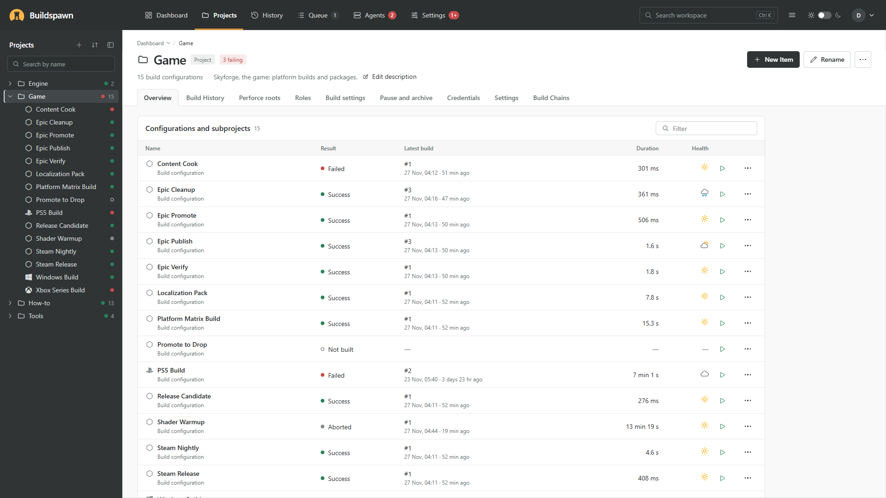
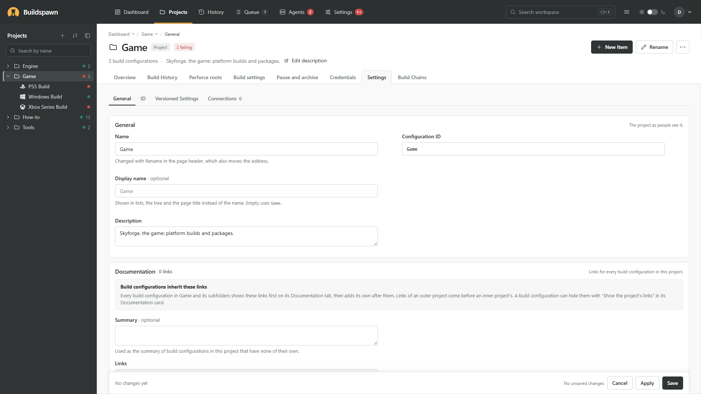
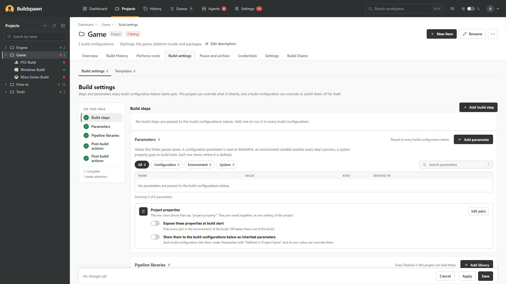

Projects
Projects are folders that group build configurations and pass settings down to them. Set something once on a project and every build configuration inside gets it.
A studio usually has one project per game or tool, for example Game, Engine and Tools. Inside a project you keep the build configurations (the things that run, such as Windows Build or PS5 Build) and, if you like, more projects inside it (subprojects).

What a project holds
Open a project from the project tree on the left, or from the Projects page. The header shows its name, how many build configurations fail, and the New Item button. The tabs are:
| Tab | What you find there |
|---|---|
| Overview | The build configurations and subprojects inside, with result, latest build, duration and health. Use Filter to find one by name. The play button starts a build; the … menu holds more actions. |
| Build History | Every build of every build configuration in this project, newest first. |
| Perforce roots | Perforce connections that the build configurations below can share. See Perforce. |
| Build settings | Build steps and parameters that every build configuration below gets. See What a project passes down. |
| Pause and archive | Stop every build configuration inside from starting builds, or archive the whole project. |
| Credentials | Passwords, keys and tokens that only the build configurations in this project can use. |
| Settings | The project's own settings: name, ID, description, documentation links, versioned settings, connections and templates. |
| Build Chains | Builds that start other builds, drawn as chains. |
Inside the project, the tabs of a project are described on this page. The coloured dot after a project in the tree is the worst result inside it: if one build configuration fails, the project shows red.
Project settings
Open Settings on the project. The side menu groups the settings:
- Project: General (name, display name, description, documentation links), ID, Versioned Settings (keep the project's settings in Git or Perforce, see Versioned settings) and Connections.
- Build: Build settings and Templates. The number beside each shows how many items it holds.
- Shared with the jobs below: Perforce roots and Credentials.

The Display name is what people see in lists and in the tree. Leave it empty to show the name. To change the name itself, and the address of the project, use Rename in the page header.
What a project passes down
A project can hand settings to everything below it. A build configuration then runs with its own settings plus what its projects give it. The chain goes from the Root project (the top of the server, under Settings), through each project and subproject, to the build configuration.
A project passes down:
- Build steps, which run in every build configuration below, before the configuration's own steps.
- Parameters: configuration parameters,
env.environment variables andsystem.properties. See Parameters. - Post-build actions and build features that wrap the build.
- Perforce roots, credentials and documentation links.

Change what a build configuration inherits
On a build configuration's Build Steps and Parameters pages, an inherited item has a chip that says where it comes from. For each inherited item you can:
- Override it: change it for this build configuration only. The project's item stays as it is.
- Disable in this job: switch it off for this build configuration only.
- Reset: drop your override or your disable and go back to what the project gives.
A subproject can do the same with what its parent project gives. If something was switched off higher up, the page shows Disabled above: change it on the project that switched it off.
Changing what a project passes down needs the build settings permission on that project, not just Configure. Without it, the Build settings tab is read-only. An administrator grants it with project roles; see Users, groups and permissions.
Create a project
- Open the project you want the new one to sit in, or the Projects page for a top-level project.
- Click New Item (or + at the top of the project tree).
- Type a name, for example
Engine. Check the ID. - Under Type, click the card Project and click Create.
- On the settings page that opens, add a description and, if you like, an icon and a colour. Click Save.
Now add build configurations to it: see Create a build configuration.
More about projects
- Item types: every type on the New Item page, and the ones that are hidden.
- Tree order and separators: put items in your own order and group them.
- Pause and archive: stop a whole project, or take it out of use. Everything inside is paused or archived too.
- Project icons: platform icons.
- IDs and the parent-ID prefix: why a rename or a move never breaks a dependency.
- Rename, move and delete: with the checks that warn you before something breaks.
- Views: tabs that show only some build configurations, with every List View field.
- Copying settings and Templates.
- Project settings: every field of the project settings.
Projects and build configurations keep a stable ID even when you rename or move them. Other settings refer to the ID, so a rename never breaks a dependency.